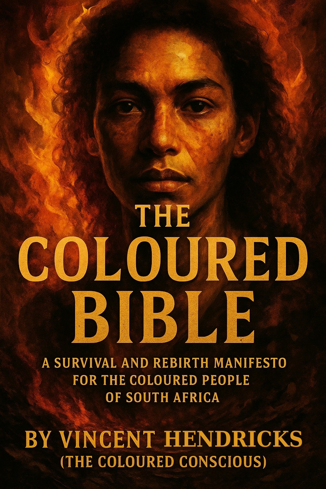

🔖
Vineys Reader
Enter the access key from your purchase to start reading.
Unlock my book
Don't have a key yet? Get your copy

Tap to open
Vineys Reader
THE COLOURED BIBLE
1 Page
2 Page
−
⟲
+
🔊 Read aloud
⚙ Voice
Aa Text
Load a book
❮
❯
1 / 1
Paginating…
Load a book
Title
Author (optional)
Paste the text, or
upload a .txt or .docx file
Use original manuscript
Cancel
Open book
Read-aloud voice
Voice
Pitch
0.88
Speed
0.92
Cancel
Save
Text appearance
Font
Libre Caslon (default)
Georgia
EB Garamond
Charter
Inter (sans-serif)
Line spacing
1.45
Paragraph indent
1.4em
Reset to default
Cancel
Save